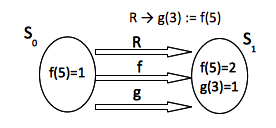
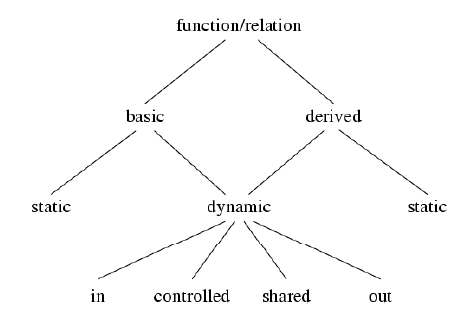

Torna alla pagina di Modellazione ed Analisi di Sistemi
:: Modellazione ed Analisi di Sistemi - Abstract State Machines ::
Ove non meglio specificato, tutti i testi tra virgolette vanno intesi come citazioni letterali dalle slide della prof Riccobene Elvinia Maria, 2010.
A causa delle innumerevoli limitazioni presentate dalle FMS sono state introdotte le ASM – Abstract State Machines. Le ASM sono l'estensione degli automi a stati finiti, la differenza con quest'ultimi sta proprio nello stato, di fatti si passa ad uno stato di controllo strutturato, dove è possibile effettuare una modellazione anche su dati complessi.
Le transizioni nelle ASM sono regole che governano il cambiamento di funzioni da uno stato attuale allo stato successivo. Esistono diversi costruttori di regole, i quali sono descritti brevemente di seguito:
Per poter modellare un sistema le AMS posseggono un tool per l'Editing, la Simulazione, la Validazione, la Verifica e Generazione di casi di Test. Tutti questi ingredienti rendono le ASM uno strumento molto vicino al linguaggio di programmazione.
Le ASM si compongono di un:
Nelle macchine a stati finiti una particolare situazione può essere modellata con un automa, il quale possiede uno stato iniziale e delle funzioni di transizione che fanno cambiare lo stato a seconda del verificarsi di determinate regole. Questo in ASM può essere definito da programmi:
if ctl_state = i then if c1 then R1 ctl_state := j1 […]
ASM vs FSM quali sono le differenze?
Inoltre nelle ASM gli stati, oltre ad essere associati ad un insieme di qualsiasi tipo, possono essere memorizzati in variabili e funzioni. Dunque quando si avrà un cambiamento di stato all'interno della locazione si avrà un cambiamento di valore.
Per concludere si può dire che un' ASM è una macchina a stati finiti con memoria, le cui transizioni possono far cambiare valore alla cella utilizzata per memorizzare gli stati.
Nelle ASM in un vocabolario Σ definisco tutti i simboli e i nomi di funzione che si possono utilizzare. Si possono distinguere due tipi di funzioni, Statiche o Dinamiche.
Le funzioni Statiche sono quelle funzioni (che posseggono arietà > 0) definite mediante una legge fissa. In particolare sono funzioni che non variano durante l'esecuzione della macchina. Esempi di funzioni statiche sono le classiche operazioni sui numeri (+,-,*, …) e sui booleani. Si possono definire anche funzioni nuove, il vincolo che si deve rispettare è che tali operazioni siano ammesse nel dominio definito. Esistono anche funzioni statiche di arietà pari a 0, tali funzioni prendono il nome di costanti.
La funzioni Dinamiche sono quelle funzioni che variano la legge durante l'esecuzione della macchina.
Esempio di vocabolario: Σbool → vocabolario dell'algebra boolena. Tale vocabolario possiede:
Se fisso un insieme di simboli e ne do la loro interpretazione quello che ottengo è una struttura algebrica o algebra. Dall'esempio precedente si ottiene:
Σbool = { 0, 1, -, +, *}
Possedendo questi elementi possiamo dare una definizione di Stato ASM:
“Fissato un vocabolario Σ, uno stato A del vocabolario è un insieme non vuoto X, detto super-universo di A, con le interpretazioni dei nomi delle funzioni di Σ”.
Modellando un sistema con le ASM è possibile considerare un super-universo all'interno del quale vi sono tanti piccoli universi, anziché vedere ogni componente del sistema separata. Ogni universo è un dominio, il quale contiene le sue funzioni e le sue operazioni.
Ad esempio se ho un super-universo che fa riferimento ai Processi all'interno di esso potrò identificare due universi:
Come identifico uno dei due domini all'interno del mio super-universo? Supponiamo di voler identificare il processo dei Receiver:
RECEIVER: X → Bool t.c. RECEIVER(t) = TRUE, ∀ t ∈ X
Grazie a questa proprietà è possibile operare su domini eterogenei, dove l'utente può definirne altri di base (domini enumerativi, astratti, ecc) oppure a partire da altri domini esistenti, formando domini strutturati.
“I termini di Σ sono espressioni sintattiche così costruite:
Modellare un sistema mediante le ASM vuol dire costruire un modello il quale possiede diversi stati, attraverso i quali la macchina può passare a seconda della computazione fatta. Di conseguenza, nella fase di modellazione, dovremo scrivere delle regole che faranno aggiornare il sistema a seconda del verificarsi o meno di alcune regole. Si è parlato prima di domini astratti, “aggiornare stati astratti vuol dire cambiare l'interpretazione delle funzioni di segnatura della macchina”.
Ci sono diversi costruttori i quali consentono di far aggiornare lo stato attuale della macchina e sono:
Oltre a questi due costruttori di regole ce ne sono altri e sono (il contenuto delle parentesi graffe denota la sintassi):
Analizziamo alcuni dei costruttori di regole:
Il Block Rule, come detto in precedenza esegue in parallelo due regole. Per capire il suo funzionamento osserviamo l'esempio seguente:

Nell'immagine si è supposto che allo stato S0 il valore di f(5) sia pari ad 1. Dopo la regola R allo stato S1 la stessa funzione f(5) è aggiornata al valore 2, mentre l'effetto della regola su g(3) vede come conseguenza l'assegnazione a tale funzione del valore 1.
Si può dire che questa è la base del costruttore par, essendo la regola eseguita in parallelo prima dello stato S1 il valore della funzione g(3) assumerà il valore di f(5) posseduto allo stato precedente.
Il costruttore seq esegue due regole in sequenza, quindi a differenza del par nell'esempio precedente si avrà che, per effetto della regola g(3) := f(5), il valore di g(3) questa volta sarà 2. Tale evento è spiegabile da fatto che, per effetto delle operazioni fatte in sequenza, prima verrà aggiornato lo stato di f(5) e successivamente ci sarà l'assegnamento a g(3).
Le MacroCall Rule invece corrispondono a delle chiamate di funzione, quindi la seguente notazione r[t1,...,tn] possiede il seguente significato: “Chiama r (regola con parametri) con argomenti t1,...,tn”.

Figura presa dalle slide del corso
Questo è l'albero delle funzioni ASM, si può osservare che le funzioni Dynamic possiedono più tipi di sotto-funzioni, diamone una breve descrizione:
Osservando l'albero è possibile osservare che ci sono anche una classe di funzioni chiamate Derived e sono quelle funzioni che non sono nuove ma derivate da altre funzioni. Più precisamente i valori di questa tipologia di funzioni sono “computati da funzioni monitorate e funzioni statiche per mezzo di una legge o schema fissati a priori”.
Si è detto in precedenza cosa vuol dire aggiornare lo stato di una ASM e come tale aggiornamento può essere fatto. Formalmente un aggiornamento può essere definito come una tripla (f, (a1,...,an), b) dove f è la funzione n-aria in considerazione, (a1,...,an) sono gli argomenti di tale funzione e b sono elementi del super-universo.
Dati gli elementi formali di un aggiornamento la definizione formale di aggiornamento è la seguente: “Aggiornare un ASM per uno stato A vuol dire che l'interpretazione della funzione f in A viene modificata per gli argomenti a1,...,an con il valore di b”.\\
Il problema degli aggiornamenti consistenti può essere provocato da una serie di aggiornamenti, effettuati in parallelo, su una funzione per gli stessi argomenti. Di conseguenza ogni qual volta si utilizzi il costruttore par nel quale sia richiesto aggiornare più volte gli stessi argomenti di una data funzione, bisogna assicurarsi che tutti gli aggiornamenti siano consistenti. Per far rispettare questa proprietà possiamo verificare la seguente proprietà:
(f, (a1,...,an),b) ∈ U & (f, (a1,...,an),c) ∈ U, con b=c
così facendo saremo sicuri che di non avere nessun aggiornamento inconsistente.